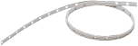
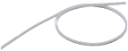
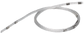
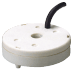
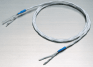
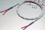

Contact Sensors / Liquid Leakage Sensors
| Introduction | Features |
| Principles | Classifications |
| Engineering Data |
|
| Explanation of Terms | Troubleshooting |
Related Contents
- Contact Sensors / Liquid Leakage Sensors
Technical Explanation for Liquid Leakage Sensors
What Is a Liquid Leakage Sensor?
A Liquid Leakage Sensor is a sensor that detects leakage of chemical liquids and pure water.
Application Examples
Detection of Condensation and Liquid Leakage at Semiconductor Production Installations
Detection is also possible for condensation inside cleaning devices and liquid leaked to the surroundings.
Detection of Liquid Leakage at Pipe Joints for Liquid Chemical Tanks
Liquid leakage at a pipe joint can be detected by wrapping the Sensing Band around the joint.
Detection of Cleaning Fluid Level for Plating Devices
The level of pure water is detected inside plating baths. High sensitivity allows high-accuracy control to prevent cleaning irregularities.
Note: Be sure to ground the baths if two or more K7L Sensors are used in the same tank in an explosion-prevention area.
Liquid Leakage Detection for Measuring Baths in CMP Devices
Liquid leaked to drain pans can be detected to prevent damage to devices and cleaning irregularities for wafers.
Features
The features of OMRON Liquid Leakage Sensors and the K7L Liquid Leakage Sensor Amplifiers are described below.
1. Inter-electrode Resistance Detection
Stable detection of liquids with impedances of up to 50 MΩ and common water. Four sensing ranges are available, ensuring detection suited to the application.
(For the K7L-AT50/AT50D.)
2. AC Detection Method
The K7L internally oscillates AC signals provided to the Sensing Band, protecting the Sensing Band from electric corrosion and ensuring safe operation.
3. Noise Canceller Function
The K7L incorporates a noise canceller circuit that uses a 3-conductor cable, ensuring a high level of noise immunity.
4. Multiple Installation
The power supply circuit and the detection circuit are isolated, allowing several Amplifiers to be installed in the same place.
5. Sensing Band with Excellent Chemical Resistance
SUS316 and polyethylene are used for the Sensing Band's core and sheath to ensure high resistance to both acidic and alkaline liquids.
Fluoroplastic Sensing Bands are also available and they have higher resistance to both high temperatures and chemicals compared the polyethylene Sensing Bands.
6. Helps to downsize gang-mounted panels.
The extremely compact size, with a width of only 16 mm, helps to save panel size when mounting several Units together.
Operating Principles
With the inter-electrode resistance detection, when liquid makes contact with the two electrodes on the Liquid Leakage Sensing Band (hereafter simply called Sensing Band), current flows through the liquid and the liquid leakage is detected.
Operation While Monitoring for Liquid Leakage
Short-wave signals (2.5 VAC, 3.75 Hz) for liquid leakage detection are output from terminal 4 of the K7L.
When there is no liquid leakage, the liquid leakage detection signals that are output are interrupted by the Terminator and the core of the Sensing Band will form an open loop.
Operation at Liquid Leakage Detection
When liquid leakage occurs within the sensing range, the liquid leakage detection signals output from terminal 4 are input to terminal 2 through the leaked liquid.
The voltage of the input signals will vary with the resistance of the leaked liquid. This voltage is compared with the detection level set at the K7L.
As a result of the comparison, if the K7L determines that liquid leakage has occurred, the K7L's output LED will light, and the liquid detection output will either turn ON or OFF.
Disconnection detection function
(This applies only to Liquid Leakage Sensor Amplifiers with disconnection detection function.)
Operation While Monitoring for Disconnection
Output of disconnection detection signals starts within 2 s of power being supplied to the K7L and is repeated at 7-s intervals.
Disconnection signals are DC signals of 10 V max. that are output for approximately 200 ms. During this time, the K7L is in disconnection monitoring mode, i.e. it monitors for disconnections only and the liquid leakage detection signals are stopped.
If there is no disconnection, the disconnection detection signals (10 VDC) that are output pass through the Terminator and return to the K7L. The K7L takes this as normal, i.e., there is no disconnection.
Operation at Disconnection Detection
If there is a disconnection, the signals will be interrupted at the place where the disconnection occurred, and will not return to the K7L.
If the signals do not return when the K7L is in disconnection monitoring mode, it will determine that a disconnection has occurred. The output indicator will flash, and the disconnection output will turn ON/OFF depending on the position of the DIP switch (right).
Classifications
Sensing Bands
| Model | Description | Appearance |
| F03-16PE | This is a basic sensing band. Use this Sensing Band for quick detection of liquid leaks in semiconductor production equipment, computer rooms, etc. This Sensing Band can also be used when the installation location has an electroconductive material. |  |
| F03-16PT | The F03-16PT is made from fluoroplastic, which gives it higher resistance to both high temperatures and chemicals than the F03-16PE. This Sensing Band can detect on both sides. |  |
| F03-15 | Use this Sensing Band for dusty and humid environments. The electrodes are exposed, so install this Sensing Band in locations requiring insulated materials. |  |
| F03-16PS F03-16PS-F | These are point-type sensors, so dismounting and wiping are easy. "-F" models have fluorine-coated electrodes, so they have superior resistance to chemicals. Also, multiple Sensing Bands can be connected to one Sensor Amplifier. |  |
| F03-16SF | Greater flexibility compared with the F03-16PE. It is suitable for factory floors, ceilings, and winding around pipes. |  |
| F03-16SFC | Greater flexibility compared with the F03-16PE. The sheath becomes transparent to reveal the red inner sheath if liquid leakage occurs, thereby enabling visual confirmation. |  |
For details on Sensing Bands, refer to the datasheets of individual products.